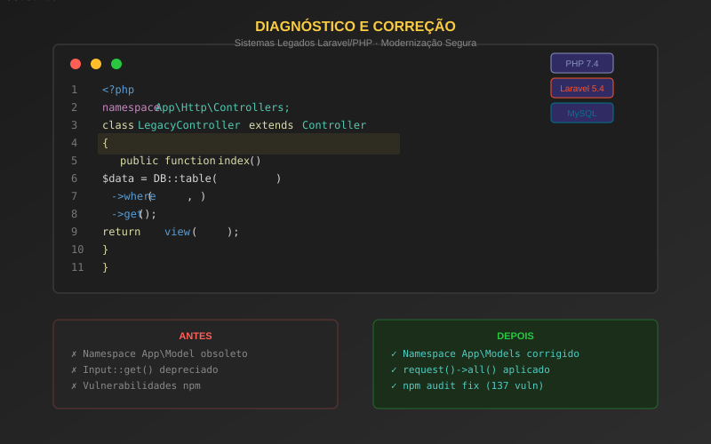

Migração estratégica de infraestrutura web e serviços entre plataformas, com planejamento completo, transferência segura de dados, reconfiguração de DNS, renovação de certificados SSL e ajuste fino de performance. Serviços mantidos sem interrupção, com rollback planejado e documentação completa de todo o processo — executado com auxílio de IA (Hermes Agent + OpenCode).
Leia Mais
Se você trabalha com pequenas empresas, comércio ou logística, esse sistema pode ser um ótimo ponto de partida para personalização ou evolução conforme necessidades reais de operação.
Leia MaisA Agenda de Contatos 2.0 é uma aplicação robusta e eficiente, desenvolvida para otimizar a gestão de contatos e ramais em ambientes corporativos. Utilizando tecnologias de ponta, o sistema oferece uma experiência de usuário fluida, segura e de alta performance.
Leia Mais

O Sistema de Controle de Portaria é uma solução tecnológica robusta e integrada, projetada para otimizar e formalizar o processo de registro de entrada e saída de veículos em portarias. Combinando uma aplicação de desktop para o ponto de entrada e uma plataforma web para gestão e consulta, o sistema centraliza todas as informações em um banco de dados MySQL, garantindo segurança, agilidade e rastreabilidade completa das operações.
Leia MaisO FTP Uploader é uma aplicação web full-stack, desenvolvida como uma PWA (Progressive Web App), que oferece uma interface moderna e responsiva para o gerenciamento completo de arquivos em servidores FTP. Projetada para ser robusta, segura e de fácil utilização, a solução é ideal tanto para ambientes corporativos quanto para uso pessoal. No backend, utiliza Node.js com Express e a biblioteca basic-ftp para operações FTP eficientes e baseadas em promises. O sistema implementa um mecanismo de filas por cliente para evitar conflitos de concorrência e garantir a serialização das operações. Entre suas funcionalidades principais estão: upload e download de arquivos, navegação remota, criação/exclusão de diretórios e suporte a FTPS com compatibilidade para certificados self-signed. O frontend é construído com HTML5, CSS e JavaScript puro (Vanilla JS), seguindo uma arquitetura SPA (Single Page Application). A interface conta com recursos como drag & drop, navegação intuitiva, barras de progresso para uploads e notificações em tempo real. A PWA pode ser instalada e oferece experiência próxima à de um aplicativo nativo, inclusive com suporte a operações offline parciais. Foram adotadas diversas medidas de segurança, como prevenção contra path traversal, sanitização de entradas, validação de credenciais e limite de 1 GB por arquivo. O sistema também inclui retry automático e fallback para lftp em caso de falhas, garantindo resiliência e continuidade nas operações. Configurável via variáveis de ambiente, o FTP Uploader é uma solução completa, pronta para produção, que oferece uma forma acessível, segura e eficiente de gerenciar arquivos FTP diretamente pelo navegador.
Leia Mais
Sistema web para controle e rastreabilidade do processo produtivo de compensados/madeira,
desenvolvido em Laravel 5.4 com suporte multi-tenant, geração de relatórios
em PDF e Excel, e dashboards de indicadores industriais em tempo real.
Recebeu correções extensas: migração de 63 models para namespace App\Models,
auditoria de exportação Excel em 15 controllers, implementação de indicadores com farol NC,
paginação, form requests e documentação completa de todas as alterações — tudo com
Hermes Agent e OpenCode, sem interrupção em produção.


Implementação prática de Inteligência Artificial para operação assistida de infraestrutura de TI, utilizando agentes especializados como Hermes Agent, OpenCode, Codex/Codebuff e GitHub Copilot para diagnosticar incidentes, corrigir sistemas legados, documentar ambientes complexos e acelerar melhorias com controle técnico rigoroso. Configuração de provedores LLM (Groq, Gemini, OpenRouter), fallback de modelos, compactação de contexto e guardrails operacionais.
Leia MaisProjeto contínuo de evolução dos painéis de indicadores industriais, integrando dados de produção via Firebird 4.0, automações em n8n, visualização em Power BI e dashboard web customizado com JavaScript puro. Inclui correção de período padrão e calendário nos filtros de data, visualização de eficiência por máquina, tooltips customizados e sistema de retry em falhas de banco — tudo preservando customizações existentes.
Leia Mais

Trabalho especializado de diagnóstico, correção e modernização de aplicações Laravel/PHP legadas em ambientes de produção e homologação, com múltiplas versões de PHP (7.4 / 8.5), Apache FPM e bancos de dados variados (MySQL, MariaDB, Firebird). Inclui ajustes de namespace, correção de métodos obsoletos, configuração de VirtualHost isolado, remediação de vulnerabilidades e documentação completa das alterações.
Leia MaisMigração completa do proxy Squid de um servidor Debian 8 (Jessie) para Debian 13 (Trixie) com swap de identidade de rede, mantendo o IP [IP_PROXY]. Inclui dashboard GoAccess em tempo real, painel de alertas de acessos indevidos (403), relatórios SARG, controle de TeamViewer por MAC, migração de DNS (BIND9), monitoramento Zabbix e backup Bareos. Tudo executado com Hermes Agent + OpenCode, sem downtime.
Leia Mais